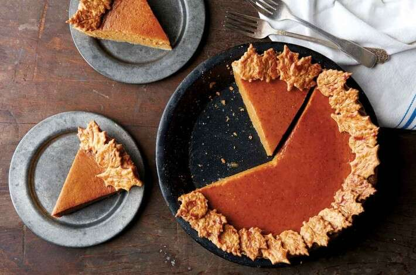

Pumpkin Pie!
How to make a Pumpkin Pie
Pumpkin Piess are one of the most exquisite delicacies one can imagine.
Make sure you have the following items to begin:
- 2 cups mashed, cooked pumpkin
- 1 (12 fluid ounce) can evaporated milk
- 2 eggs, beaten
- ¾ cup packed brown sugar
- ½ teaspoon ground cinnamon
- ½ teaspoon ground ginger
- ½ teaspoon ground nutmeg
- ½ teaspoon salt
- and most important, Love.
Follow these steps:
- Preheat oven to 400 degrees F (200 degrees C).
- Prepare pie crust by mixing together the flour and salt. Cut shortening into flour; add cold water 1 tablespoon at a
time (you may need only 3 tablespoons, or up to 4 tablespoons). Mix dough and repeat until dough is moist enough to hold
together.
- With lightly floured, hands shape dough into a ball. On a lightly floured board roll dough out to about 1/8 inch
thickness. With a sharp knife, cut dough 1 1/2 inch larger than the upside-down 8- to 9-inch pie pan. Gently roll the
dough around the rolling pin and transfer it right-side up onto the pie pan. Unroll, easing dough into the bottom of the
pie pan.
- In a large bowl, beat pumpkin with evaporated milk, eggs, brown sugar, cinnamon, ginger, nutmeg and salt with an
electric mixer or immersion blender. Mix well. Pour into a prepared crust. Bake 40 minutes or until when a knife is
inserted 1 inch from the edge comes out clean.
- *If you would like to drizzle with caramel click the link below.
Homemade Caramel Drizzle
